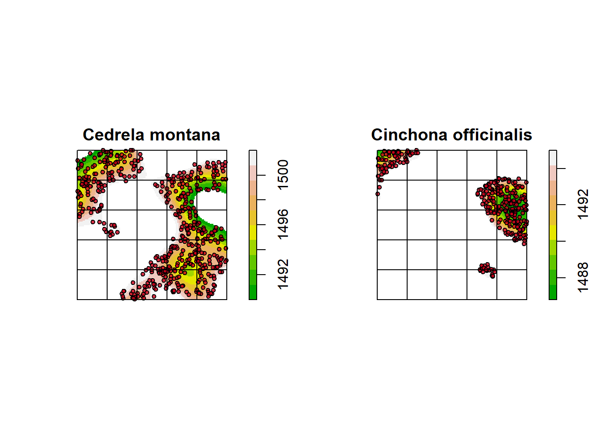
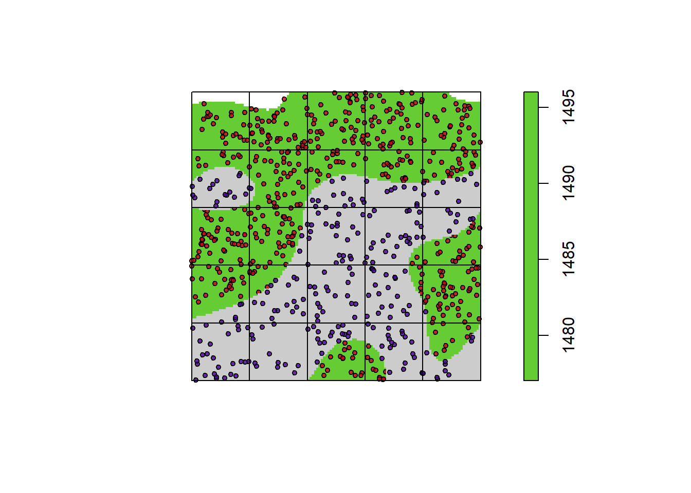

Densidad y Abundancia
Para regresar a Ejercicios interactivos pulsa |
1 Introducción
Una de las propiedades más importantes de una población es su tamaño, es decir, la cantidad de individuos que la población alcanza en un determinado sitio. Aunque esta propiedad es muy sencilla de comprender, como siempre en ecología, no es fácil de obtener en el campo.
En el presente trabajo aclararemos cuatro conceptos fundamentales:
- Abundancia total: cantidad total de individuos de una población. Se obtiene multiplicando la densidad por el área de distribución de la especie.
- Abundancia relativa: proporción de individuos de una especie respecto al total de individuos muestreados. Permite comparar el tamaño de dos o más poblaciones bajo distintas condiciones.
- Densidad absoluta: número de individuos por unidad de área (por ejemplo, árboles por hectárea, aves por metro cuadrado).
- Densidad relativa: índice que relaciona el número de individuos con el esfuerzo de muestreo (por ejemplo, aves capturadas por metro de red de neblina).
Dentro de la densidad absoluta distinguimos dos formas de cálculo:
- Densidad bruta: número de individuos dividido para el área total del estudio.
- Densidad ecológica: número de individuos dividido para el área que realmente ocupa la especie.
Estos conceptos están planteados desde el punto de vista de la población. Obtener información a nivel de la población total implica poder realizar un censo; sin embargo, como sabemos, eso no es posible. Por eso, mucho de nuestro trabajo y nuestros argumentos implican trabajar con muestras.
2 Test diagnóstico
Antes de iniciar el ejercicio, por favor completa el siguiente test diagnóstico. Tus respuestas nos ayudan a mejorar la aplicación y a conocer tus conocimientos previos.
3 Casos de estudio
A continuación presentamos dos casos de estudio. En el primero compararemos la abundancia y densidad entre dos especies. En el segundo compararemos una misma especie bajo dos condiciones distintas.
3.1 Caso 1: Comparación de poblaciones de dos especies
Vamos a comparar la densidad y abundancia de Cedrela montana y de Cinchona officinalis, dos especies que habitan los bosques montanos de Ecuador. Este ejercicio es hipotético y los datos no corresponden a datos reales.
La primera especie, Cedrela montana, se desarrolla en las partes más altas. La segunda, Cinchona officinalis, se encuentra distribuida en las zonas más bajas.
Ahora calcularemos la densidad y la abundancia para cada especie. Como no podremos usar los datos de censos, realizaremos un muestreo.
Usted puede muestrear las dos poblaciones y obtener el tamaño para cada especie en cada parcela. Puede cambiar el tamaño de la parcela y la cantidad de parcelas muestreadas. El “Tamaño de parcela” es la longitud de cada lado, en metros. La zona de estudio es de 500 × 500 metros, es decir 250.000 m².
NoteEjercicio interactivo — Caso 1
Accede al muestreo interactivo aquí (selecciona la pestaña “Caso 1”):
Lo primero que haremos es modificar la cantidad de muestras. Cada vez que usted modifica el número de muestras, aparecen aleatoriamente en el gráfico las parcelas. Uno de los problemas es que algunas parcelas caen en sitios donde no hay individuos de la especie. Puede ver el número de individuos en cada parcela en la pestaña “Tabla”. Modifique el número de muestras y observe los datos. Responda:
- ¿Cuál de las dos especies presenta un mayor número de parcelas con cero individuos?
- ¿Qué nos dice eso sobre el patrón de distribución espacial de cada especie?
- ¿Hay diferencias entre las especies en la variabilidad del número de individuos por parcela?
Nuestro siguiente trabajo será calcular la abundancia de cada especie y su densidad, tanto bruta como ecológica. Usaremos dos metodologías:
- 15 parcelas de 50 metros de lado.
- 10 parcelas de 100 metros de lado.
Con cada método:
- Calcular la abundancia de cada especie. Recuerde que el área de distribución de cada especie está marcada en los gráficos.
- Calcular la densidad ecológica y bruta de cada especie.
- Usar la densidad bruta para calcular la abundancia tomando en cuenta los 250.000 m².
- Usar la densidad ecológica y la distribución real para calcular la abundancia.
Responda:
- ¿Cuál de las dos especies es más abundante?
- ¿Cuál de las dos especies tiene una mayor densidad bruta?
- ¿Cuál de las dos especies tiene una mayor densidad ecológica?
- ¿La conclusión sobre cuál especie es más abundante cambia según uses densidad bruta o ecológica? Explica por qué.
- ¿Existe diferencia entre la abundancia calculada con densidad bruta y con densidad ecológica?
Espero que el ejercicio no haya sido complicado. Me gustaría ahora conocer algunas de sus apreciaciones sobre el ejercicio que acaban de realizar. ¿Cuáles cree que son las limitaciones de realizar estas evaluaciones en el campo? ¿Cree que realmente es posible calcular la abundancia en el campo? ¿Es factible calcular la densidad ecológica en el campo?
3.2 Caso 2: Comparación de la misma especie bajo dos escenarios
En este ejemplo compararemos la abundancia de Amazilia amazilia, una especie de colibrí que se encuentra en zonas de bosque (en verde) y en zonas de cultivo (en gris). Este también es un caso hipotético.

Vamos a calcular la abundancia en cada uno de los dos usos de suelo. En gris tenemos el área de cultivo, mientras que en verde tenemos el área de bosque. Usted podrá muestrear cada una de las localidades y definir si existen cambios en la abundancia.
NoteEjercicio interactivo — Caso 2
Accede al muestreo interactivo aquí (selecciona la pestaña “Caso 2”):
Seleccione “Número” para ver la numeración de cada cuadrante. Escoja un número donde quiera ubicar la parcela de observación, ponga ese número en “Parcela”. Esto le permitirá obtener el valor de abundancia en ese sitio. Recuerde qué uso de suelo está muestreando: Bosque (en verde) o Cultivo (en gris), y selecciónelo en “Uso de suelo”. La abundancia se mostrará a un lado del gráfico. Presione “Agregar muestra” para acumular los datos de cada parcela.
Vamos a seleccionar cinco sitios para cada uso de suelo y anotar la cantidad de individuos en cada parcela. Construya una tabla de datos con los datos de abundancia y obtenga el valor de densidad para cada parcela. Nuestra parcela abarca un área de 5.625 m² (un cuadrado de 75 × 75 metros). Con los datos de abundancia por parcela, transforme estos datos en abundancia relativa: divida el valor de cada parcela para el total de individuos encontrados en el muestreo en las dos coberturas.
Calcule el área para cada tipo de uso de suelo. La app calcula automáticamente el área de cada uso a partir de la máscara; puedes verificarla en la pestaña “Resumen”. Calcula la abundancia total para la especie en cultivos y en bosque usando la densidad media y el área de cada uso de suelo. La densidad media para cada uso de suelo debe ser obtenida como la suma de las densidades encontradas en cada parcela dividido para el total de parcelas.
Los datos deberían tener la siguiente estructura:
| AbunBosque | AbunCultivo | DenBosque | DenCultivo | AbunBosRe | AbunCulRe |
|---|---|---|---|---|---|
| 5 | 4 | 8.8 | 7.1 | 0.55 | 0.45 |
Con los datos calculados responda:
- ¿En cuál de los dos usos de suelo A. amazilia se encuentra en mayor abundancia total?
- ¿Es posible llegar a la misma conclusión usando los datos de abundancia y densidad de cada parcela?
- En un estudio real, ¿qué tan factible es obtener el dato de abundancia total?
- ¿Cuáles son las limitaciones de usar la abundancia por parcela como una medida comparable entre sitios?
- ¿Qué variación observas entre parcelas de un mismo uso de suelo? ¿Cómo podrías usar esa información en un análisis más riguroso?
4 Test sumativo
Una vez que hayas completado los dos casos, por favor responde el test sumativo. Tus respuestas nos ayudan a evaluar la utilidad del ejercicio y a mejorarlo.
5 Informe del trabajo
Una vez que haya desarrollado este trabajo, debe construir un informe que contenga los datos levantados durante los ejercicios y las respuestas a las preguntas planteadas.
5.1 Estructura del informe
- Introducción (1 párrafo): ¿por qué es importante medir abundancia y densidad en ecología?
- Metodología: qué tamaño de parcela usó, cuántas muestras levantó, qué metodología aplicó en cada caso.
- Resultados: tablas con abundancia, densidad bruta, densidad ecológica y abundancia relativa para cada especie y cada uso de suelo. Incluye el gráfico comparativo del Caso 2.
- Discusión: responde las preguntas de reflexión y conecta con la lectura de propiedades de las poblaciones (tema 1.1). Menciona al menos una limitación práctica y una pregunta que te haya surgido.
- Anexos: capturas de pantalla de la app donde se evidencie el trabajo realizado.
Extensión: 1–2 páginas.